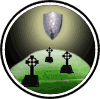

|

|
>> Содержание / Список кланов /
KNIGHTS
Начиналось все много, очень много лет назад. Нашей страной правил тиран. Тогда были очень тяжелые времена. Народ голодал, умирал от постоянных болезней. И, казалось, этому не будет конца.
Но вдруг, в один, во истину прекрасный день, в нашу деревню пришел путник. Он произвел на всех огромное впечатление. Это был воин. Он прожил у нас несколько лет. И как-то, неожиданно для всех он исчез. А вместе с ним пропал сын мельника. Славный парень, работящий. Ловкий и быстрый. Люди огорчились от его внезапного исчезновения. Даже мельник ничего не мог сказать. Дела его пошли все хуже и хуже. Потом он умер. Хотя мог жить еще очень долго.
Прошло несколько лет и сын того самого мельника вернулся. Но это был уже не парень. А крепкий, сильный мужчина. Вокруг него собрались люди, близкие друзья, потом они удалились с фразой: король и смерть!
Прошел еще месяц и в город ворвалась большая толпа людей. Среди них были войны, маги, лучники. С грамотной тактикой боя и бесстрашием они ворвались в замок.
Позже все узнали, что тиран убит. Эти люди установили новый порядок. Всем дали равные права. Они назвались кланом «РАВНОПРАВИЕ».
На протяжении многих лет клан «РАВНОПРАВИЕ» защищал и помогал мирным жителям, наказывая убийц и негодяев. В клан брали самых достойных, честных, справедливых и бесстрашных воинов. Но пришло время когда их предводитель покинул этот мир и у клана наступили сложные времена, многие отчаявшись сложили оружие и ушли на покой.
Оставшиеся шесть членов клана пережили много трудностей на своем пути,но в трудную минуту, как и раньше, народ обращался к ним за помощью. Равноправцы отстаивали свою честь сражаясь в неравных битвах и доказывали, что стоят своих предков. Они обучали преданных и сильных бойцов с детства, пополняли свои ряды воинами которые были готовы служить добру! Так шли годы... Не смотря на то что двое из шести новых предводителей покинуло клан,«РАВНОПРАВИЕ» снова стал одним из сильнейших в округе.
В один день, наверно никто уже не вспомнит когда именно это было....Собравшись в таверне старожилы клана, обсуждали планы на будущее и их мнения разделились, разговор перешел в бурную ссору. Один из самых сильных воинов нарушил святыню клана *равные права между всеми* и выгнал молодого мага, без голосования. Это повлекло за собой ответную реакцию и многие воины ушли вслед за ним. Через несколько дней они собрались на перекрестке трех дорог, недалеко от замка и долго совещавшись, решили основать новое поселение и новый клан, где каждый член будет абсолютно равен перед всеми.
Так появился на свет клан «РЫЦАРИ РАВЕНСТВА».
Мы Рыцари... и этим всё сказано!
Официальный сайт клана: http://knights.ucoz.kz/
|
 |
|